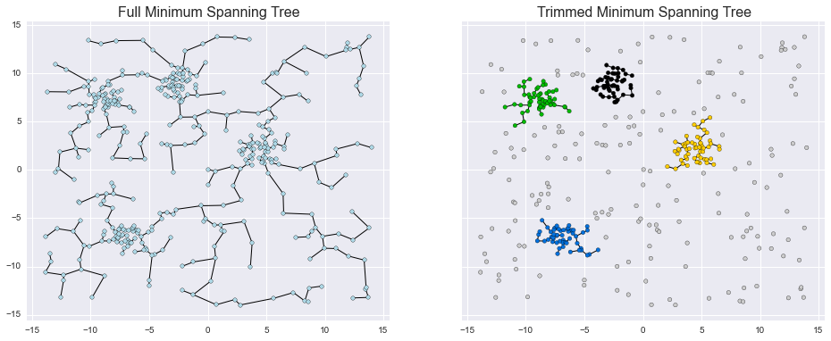

mst_clustering: Clustering via Euclidean Minimum Spanning Trees
Repository link »
PDF link »
View review issue »

VanderPlas et al., (2016), Journal of Open Source Software, 1(1), 12, doi:10.21105/joss.00012
Summary
This package contains a Python implementation of a clustering algorithm based on an efficiently-constructed approximate Euclidean minimum spanning tree (described in (Ivezić et al. 2014)). The method produces a Hierarchical clustering of input data, and is quite similar to single-linkage Agglomerative clustering. The advantage of this implementation is the ability to find significant clusters even in the presence of background noise, and is particularly useful for researchers hoping to detect structure in physical data.
The code makes use of tools within SciPy (Jones et al. 2001–2001--) and scikit-learn (Pedregosa et al. 2011), and is designed for compatibility with the scikit-learn API (Buitinck et al. 2013).
-
References
Buitinck, Lars, Gilles Louppe, Mathieu Blondel, Fabian Pedregosa, Andreas Mueller, Olivier Grisel, Vlad Niculae, et al. 2013. “API Design for Machine Learning Software: Experiences from the Scikit-Learn Project.” arXiv Preprint arXiv:1309.0238.
Ivezić, Željko, Andrew J Connolly, Jacob T VanderPlas, and Alexander Gray. 2014. Statistics, Data Mining, and Machine Learning in Astronomy: A Practical Python Guide for the Analysis of Survey Data. Princeton University Press.
Jones, Eric, Travis Oliphant, Pearu Peterson, and others. 2001–2001--. “SciPy: Open Source Scientific Tools for Python.” http://www.scipy.org/.
Pedregosa, Fabian, Gaël Varoquaux, Alexandre Gramfort, Vincent Michel, Bertrand Thirion, Olivier Grisel, Mathieu Blondel, et al. 2011. “Scikit-Learn: Machine Learning in Python.” The Journal of Machine Learning Research 12. JMLR. org: 2825–30.